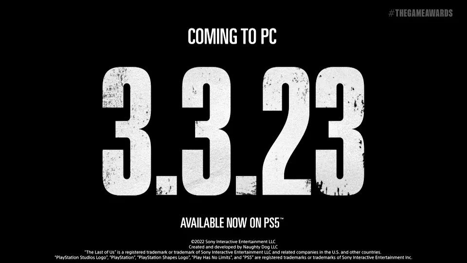

The Last of Us Part 1 recebe data de lançamento para PC
The Last of Us Part I, game desenvolvido pela Naughty Dog e publicado pela Sony Interactive Entertainment, é o remake do popular The Last of Us. Lançado em 2022, ele chegará para PC em 3 de março de 2023.
O anúncio foi feito durante a premiação The Game Awards. Vale ressaltar que o jogo já está disponível para PlayStation 5.
The Last of Us Part 1 se passa durante um surto causado por uma mutação do fungo Cordyceps, que destrói os Estados Unidos e transforma seus hospedeiros humanos em monstros canibalísticos chamados de Infectados.
LEIA MAIS
1 - God of War Ragnarok Review
2 – Elden Ring ganha como Jogo do Ano no The Game Awards;